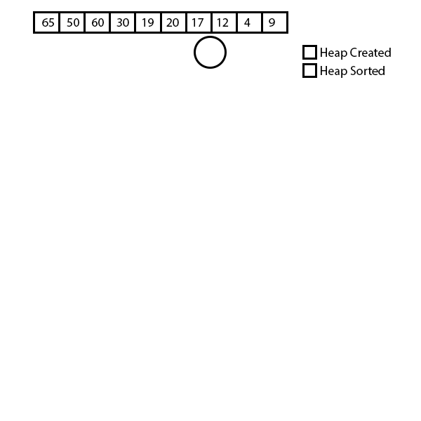
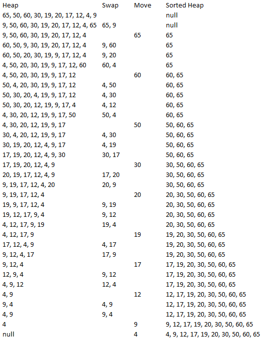

Week 6 Ex. 5: Suppose we have a heap stored in any array H with values: H = [65, 50,60,30,19,20,17,12,4,9]. Show every step illustrating how the array changes during the HeapSort algorithm using the same approach as in ex. 3.
 